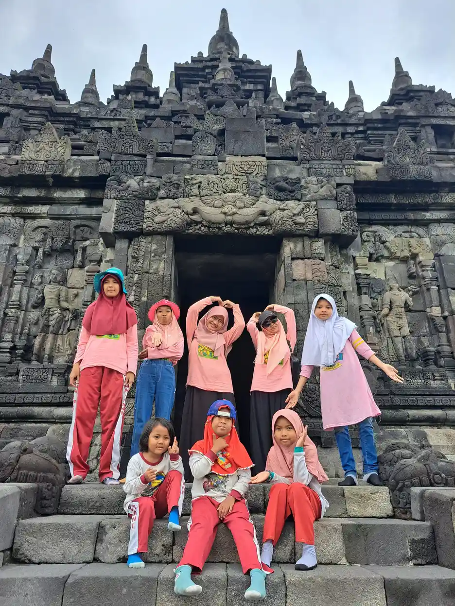
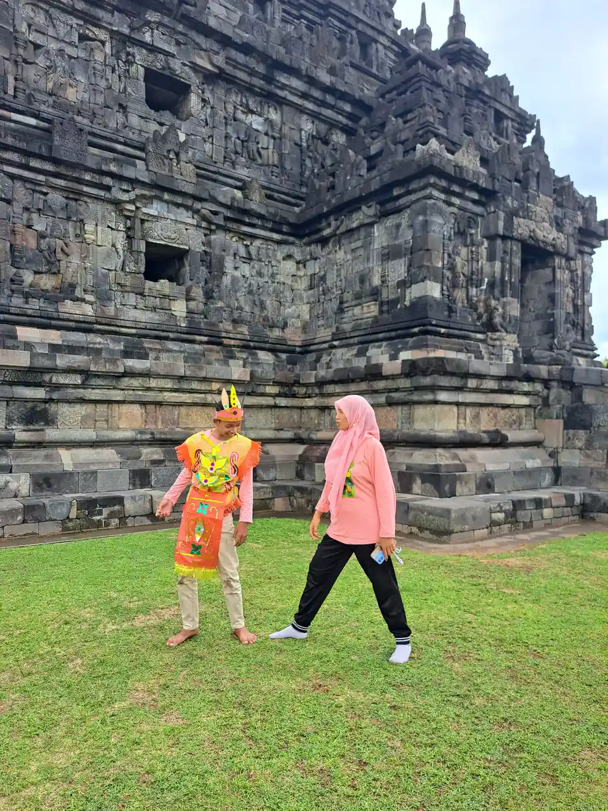
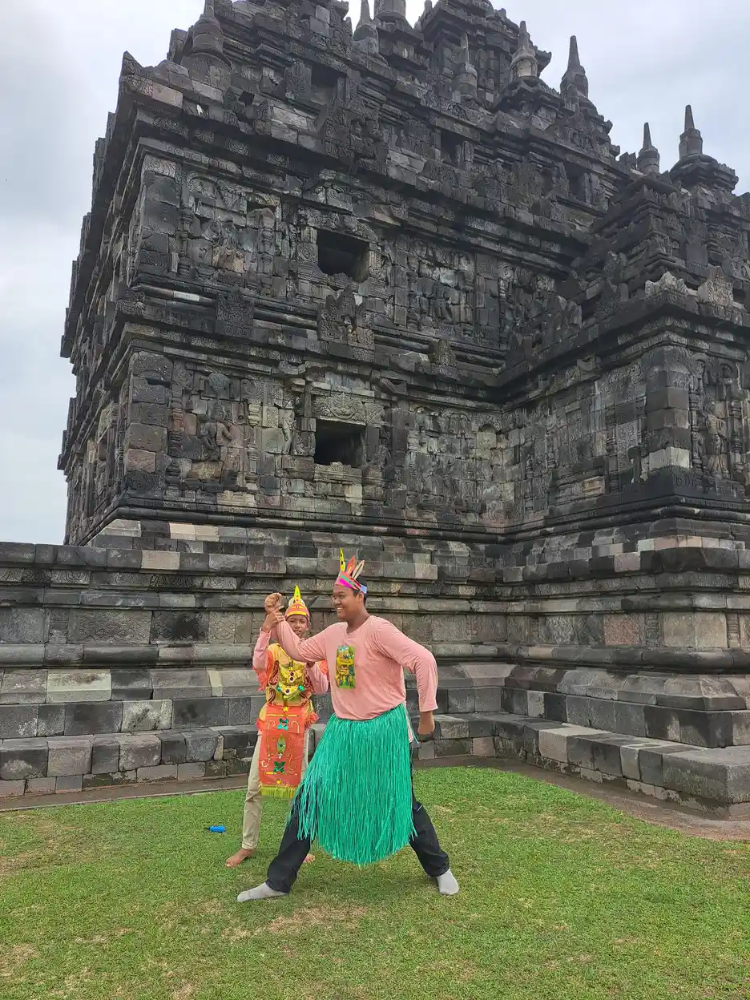
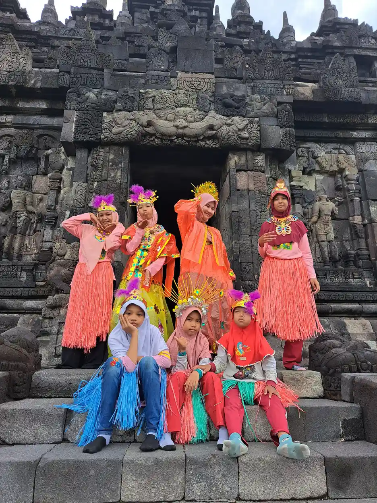

Jawaban singkat: tanda keterlambatan motorik kasar adalah kemampuan gerak besar yang belum muncul pada usia ketika sebagian besar anak sudah menguasainya, misalnya belum duduk tanpa bantuan sekitar usia 9 bulan atau belum berjalan pada usia 18 bulan. Tanda yang perlu segera diperiksa adalah hilangnya kemampuan yang sudah dikuasai, gerakan berat sebelah, serta otot yang sangat kaku atau sangat lemas. Satu tanda bukan diagnosis, tetapi cukup menjadi alasan untuk berkonsultasi.
Daftar Isi
- Apa yang dimaksud keterlambatan motorik kasar?
- Tanda pada bayi 0 sampai 12 bulan
- Tanda pada balita dan anak prasekolah
- Tanda yang perlu segera diperiksa
- Kemungkinan penyebab
- Alur pemeriksaan dan asesmen
- Peran fisioterapi dan intervensi dini
- Dukungan di rumah
- Dukungan di sekolah
- Pertanyaan yang sering diajukan
Apa yang Dimaksud Keterlambatan Motorik Kasar?
Motorik kasar adalah kemampuan memakai otot besar untuk menahan kepala, berguling, duduk, merangkak, berdiri, berjalan, berlari, dan melompat. Pengertian lengkap beserta contoh gerakannya sudah kami bahas di artikel motorik kasar adalah. Artikel ini berfokus pada satu pertanyaan yang sering membuat orang tua cemas: kapan perbedaan kecepatan gerak anak sebaiknya dibicarakan dengan tenaga kesehatan?
CDC menjelaskan bahwa milestone adalah kemampuan yang dapat dilakukan sebagian besar anak, yaitu 75 persen atau lebih, pada usia tertentu. Artinya, daftar milestone bukan batas paling awal, melainkan titik ketika kebanyakan anak sudah sampai. Bila anak belum mencapai satu atau lebih milestone, CDC menganjurkan orang tua tidak menunggu, membicarakannya dengan dokter, dan menanyakan skrining perkembangan.
IDAI mengingatkan bahwa kisaran waktu pencapaian perkembangan cukup lebar. Contohnya, anak dapat dikatakan normal bila mulai berjalan antara usia 10 sampai 18 bulan. Karena itu, keterlambatan motorik kasar tidak ditentukan dari perbandingan dengan sepupu atau tetangga, tetapi dari pola gerak anak dari waktu ke waktu, kualitas gerakannya, dan hasil pemeriksaan dengan alat skrining yang tepat.
Tanda Keterlambatan Motorik Kasar pada Bayi 0 sampai 12 Bulan
AAP menjelaskan kontrol gerak umumnya berkembang dari atas ke bawah: kepala lebih dulu, lalu tubuh bagian atas. Tabel berikut merangkum kemampuan yang menurut CDC sudah dilakukan sebagian besar bayi pada usia tertentu, beserta hal yang perlu ditanyakan bila kemampuan itu belum muncul. Daftar milestone bulan demi bulan yang lebih rinci ada di artikel milestone motorik kasar anak 0-12 bulan.
| Usia | Sebagian besar bayi sudah (CDC) | Diskusikan dengan dokter bila |
|---|---|---|
| 4 bulan | Menahan kepala tetap tegak saat digendong, bertumpu pada siku atau lengan bawah saat tengkurap | Kepala masih sangat goyah saat digendong atau bayi tidak mengangkat dada ketika tengkurap |
| 6 bulan | Berguling dari tengkurap ke telentang, mendorong dengan lengan lurus saat tengkurap, bertumpu pada tangan saat duduk | Belum berguling sama sekali atau tubuh terasa sangat lemas saat diangkat |
| 9 bulan | Duduk tanpa ditopang dan dapat mengambil posisi duduk sendiri | Belum dapat duduk walau sebentar tanpa ditopang |
| 12 bulan | Menarik badan untuk berdiri dan berjalan sambil berpegangan pada perabot | Belum dapat berdiri walau ditopang, atau merangkak dengan menyeret satu sisi tubuh |
Pada rentang 8 sampai 12 bulan, AAP meminta orang tua memberi tahu dokter anak bila bayi tidak merangkak, menyeret satu sisi tubuh saat merangkak selama lebih dari satu bulan, atau tidak dapat berdiri meski ditopang. Namun AAP juga menjelaskan bahwa sebagian anak memang tidak pernah merangkak dan memilih bergeser dengan bokong. Selama kedua sisi tubuh dipakai seimbang, cara berpindah yang berbeda ini tidak otomatis mengkhawatirkan.
Bila bayi lahir prematur, yaitu sebelum usia kehamilan 37 minggu, AAP mengingatkan bahwa perkembangannya bisa lebih lambat dibanding anak seusia. Karena itu, selalu sampaikan riwayat kelahiran ketika berkonsultasi agar tenaga kesehatan dapat menilai perkembangan bayi dengan tepat.
Tanda pada Balita dan Anak Prasekolah
Setelah usia satu tahun, perhatian bergeser ke berjalan mandiri, kualitas langkah, dan keterampilan seperti berlari, menendang, naik tangga, serta melompat. CDC mencatat bahwa pada usia 18 bulan sebagian besar anak sudah berjalan tanpa berpegangan dan dapat naik turun sofa atau kursi tanpa bantuan. Pada usia 2 tahun, sebagian besar anak sudah menendang bola, berlari, dan menaiki beberapa anak tangga dengan atau tanpa bantuan.
AAP memberi beberapa tanda yang perlu disampaikan kepada dokter anak pada rentang usia ini: anak belum dapat berjalan pada usia 18 bulan, belum menunjukkan pola jalan tumit ke jari yang matang setelah beberapa bulan berjalan, berjalan hanya dengan ujung jari kaki, atau belum dapat mendorong mainan beroda pada usia dua tahun. AAP juga menyebut tanda umum seperti kesulitan menjaga keseimbangan dan cara berjalan atau berlari yang tidak biasa.
Untuk usia prasekolah, CDC mencatat bahwa pada usia 4 tahun sebagian besar anak dapat menangkap bola besar hampir setiap kali, dan pada usia 5 tahun dapat melompat dengan satu kaki. Anak yang sering jatuh, tampak jauh lebih cepat lelah saat bermain dibanding teman sebaya, atau menghindari permainan fisik karena kesulitan, juga layak diamati lebih saksama. Ide aktivitas yang sesuai usia dapat dilihat di artikel permainan motorik kasar, tetapi permainan bukan pengganti pemeriksaan bila tanda di atas muncul.

Tanda yang Perlu Segera Diperiksa
Sebagian tanda tidak perlu menunggu jadwal kontrol berikutnya. IDAI menganjurkan orang tua tidak menunda dan segera memeriksakan anak ke tenaga kesehatan terdekat bila menemukan tanda bahaya perkembangan. Untuk ranah gerak, beberapa tanda berikut bersumber dari IDAI, AAP, dan CDC:
- Kehilangan kemampuan. Anak dulu sudah bisa duduk, berdiri, atau berjalan, lalu tidak bisa lagi. CDC dan AAP sama-sama menyebut hilangnya kemampuan sebagai alasan untuk segera berbicara dengan dokter.
- Gerakan tidak simetris. IDAI menyebut gerakan asimetris atau tidak seimbang antara anggota tubuh kiri dan kanan sebagai tanda bahaya. Contohnya bayi hanya memakai satu tangan atau menyeret satu kaki.
- Otot sangat kaku atau sangat lemas. AAP mencantumkan otot yang terasa kaku atau lunglai sebagai salah satu tanda keterlambatan motorik kasar.
- Refleks bayi yang menetap. IDAI menyebut refleks primitif, yaitu refleks yang muncul saat bayi, yang masih menetap lebih dari usia 6 bulan sebagai tanda bahaya.
- Kontrol kepala yang buruk. AAP menyebut kesulitan menahan kepala dan leher tetap stabil sebagai tanda yang perlu diperhatikan.
Tanda di atas tidak berarti anak pasti memiliki kondisi tertentu. Fungsinya adalah memberi tahu orang tua bahwa pemeriksaan sebaiknya dilakukan sekarang, bukan beberapa bulan lagi. Bila anak juga mengalami kejang, demam tinggi, atau tiba-tiba lemas, segera bawa ke fasilitas kesehatan karena keadaan itu membutuhkan penanganan medis langsung.
Kemungkinan Penyebab, Bukan untuk Mendiagnosis Sendiri
Penyebab keterlambatan motorik kasar hanya dapat ditentukan melalui pemeriksaan oleh tenaga kesehatan. AAP menjelaskan bahwa biasanya anak yang belum melakukan kemampuan tertentu akan mengejar teman seusianya, tetapi kadang keterlambatan menjadi tanda adanya kondisi kesehatan. Karena itu, mengenali kemungkinan penyebab berguna untuk memahami pertanyaan dokter, bukan untuk menebak diagnosis di rumah.
IDAI menyebut beberapa penyebab keterlambatan perkembangan, antara lain gangguan genetik atau kromosom seperti sindrom Down, gangguan atau infeksi susunan saraf seperti cerebral palsy, spina bifida, dan sindrom rubela, serta riwayat bayi risiko tinggi seperti lahir prematur, berat lahir rendah, atau sakit berat di awal kehidupan sehingga perlu perawatan intensif.
IDAI juga menjelaskan bahwa keterlambatan bisa terjadi pada satu ranah saja atau pada dua ranah atau lebih. Bila terjadi pada dua ranah atau lebih secara bermakna, kondisinya disebut keterlambatan perkembangan umum; perbedaannya dengan kondisi lain kami bahas di artikel apakah GDD sama dengan autis.
Lingkungan juga berpengaruh. Kemenkes melalui laman Ayo Sehat menjelaskan bahwa anak yang lahir sehat tanpa kelainan pun dapat mengalami gangguan perkembangan bila tidak mendapat stimulasi yang cukup, terutama di masa awal kehidupan. Hal ini tidak dimaksudkan untuk menyalahkan orang tua. Banyak keluarga menghadapi keterbatasan waktu, ruang, atau informasi, dan pemeriksaan justru membantu menemukan dukungan yang tepat.

Alur Pemeriksaan dan Asesmen
Orang tua sering bingung harus mulai dari mana. Di Indonesia, Kemenkes menjelaskan bahwa skrining perkembangan dapat dilakukan tenaga kesehatan di Puskesmas memakai Kuesioner Pra Skrining Perkembangan (KPSP). Buku Kesehatan Ibu dan Anak (KIA), yang dipakai sampai anak berusia 6 tahun, juga memuat pemantauan perkembangan termasuk motorik halus dan motorik kasar. Di Amerika Serikat, CDC mencatat AAP menganjurkan skrining perkembangan untuk semua anak setidaknya pada usia 9, 18, dan 30 bulan.
Alur umum bagi keluarga:
- Catat pengamatan. Tulis kemampuan yang sudah dan belum bisa dilakukan anak, sejak kapan, serta rekam video singkat gerakan yang mengkhawatirkan.
- Bawa Buku KIA ke Posyandu atau Puskesmas. Minta pemeriksaan perkembangan dan sampaikan riwayat kelahiran, termasuk bila anak lahir prematur.
- Ikuti skrining. Tenaga kesehatan akan menanyakan dan mengamati kemampuan anak dengan alat skrining. AAP menekankan bahwa pengamatan orang tua adalah bagian penting dari evaluasi.
- Jalani rujukan bila diperlukan. Hasil yang meragukan atau menyimpang dapat diikuti rujukan ke dokter spesialis anak, dokter rehabilitasi medik, atau layanan tumbuh kembang untuk pemeriksaan lebih lanjut.
- Susun rencana bersama. Tanyakan apa yang ditemukan, layanan apa yang dianjurkan, dan kapan evaluasi ulang.
| Pihak | Peran utama | Yang dapat disiapkan keluarga |
|---|---|---|
| Orang tua dan pengasuh | Mengamati gerak anak sehari-hari dan menyampaikan kekhawatiran | Catatan kemampuan, video singkat, Buku KIA |
| Tenaga kesehatan Posyandu atau Puskesmas | Pemantauan dan skrining perkembangan, misalnya dengan KPSP | Riwayat kelahiran dan imunisasi |
| Dokter spesialis anak atau rehabilitasi medik | Pemeriksaan lanjutan dan menentukan rujukan | Hasil skrining dan daftar pertanyaan |
| Fisioterapis | Penilaian gerak dan program latihan sesuai arahan dokter | Tujuan fungsional yang penting bagi keluarga |
| Guru dan sekolah | Penyesuaian kegiatan belajar dan bermain | Ringkasan rekomendasi terapis yang relevan |
Untuk anak usia sekolah, asesmen ABK membantu guru memahami kebutuhan belajar anak, sebagai pelengkap pemeriksaan medis.
Peran Fisioterapi dan Intervensi Dini
Bila ditemukan keterlambatan motorik, AAP menjelaskan bahwa layanan intervensi dini tersedia untuk mendukung perkembangan anak, dan anak dengan keterlambatan motorik kasar seperti berguling, duduk, atau berjalan dapat dirujuk ke fisioterapis. Anak yang juga kesulitan dengan keterampilan tangan dan kemandirian dapat dibantu terapi okupasi. Pembahasan umum tentang manfaat menangani masalah perkembangan sejak awal ada di artikel intervensi dini.
Fisioterapi anak umumnya dimulai dengan penilaian kekuatan, tonus otot, keseimbangan, pola gerak, dan kemampuan fungsional anak. Tujuannya disusun dalam bentuk yang dapat diamati, misalnya duduk stabil saat makan, berpindah dari duduk ke berdiri dengan bantuan lebih sedikit, atau berjalan di permukaan yang tidak rata. Program dan frekuensinya ditentukan fisioterapis bersama dokter sesuai kondisi anak, jadi hindari layanan yang menjanjikan hasil pasti dalam waktu singkat.
Keluarga biasanya diajari beberapa latihan sederhana untuk dilakukan di rumah. Contoh latihan dan cara melakukannya dengan aman dibahas di artikel latihan fisioterapi anak di rumah, sedangkan gambaran terapi untuk anak yang belum berjalan ada di artikel terapi fisik untuk anak terlambat jalan. Lakukan latihan hanya sesuai arahan terapis, dan laporkan bila anak tampak kesakitan atau kelelahan berlebihan.

Dukungan di Rumah
Dukungan di rumah tidak berarti mengubah seluruh waktu bermain menjadi sesi latihan. Yang lebih penting adalah memberi kesempatan bergerak setiap hari di tempat yang aman. Untuk bayi, waktu bermain di lantai dengan pengawasan membantu anak berlatih berguling, merangkak, dan menarik badan untuk berdiri. Untuk balita, ruang untuk berjalan, memanjat rendah, dan menendang bola sudah menjadi latihan yang alami.
AAP mengingatkan bahwa baby walker tidak membantu anak belajar berjalan. Alat ini justru dapat mengurangi keinginan anak untuk berjalan dan berisiko membuat anak terguling atau jatuh dari tangga, sehingga AAP sangat menganjurkan orang tua tidak memakainya. AAP juga menyebut sepatu pertama anak cukup yang tertutup, nyaman, lentur, dan tidak licin, tanpa sisipan khusus yang dimaksudkan membentuk kaki.
- Pilih satu atau dua tujuan gerak yang disepakati dengan terapis, misalnya berdiri berpegangan saat bermain.
- Selipkan latihan dalam rutinitas, seperti berjongkok mengambil mainan atau naik tangga sambil berpegangan.
- Hargai tanda lelah dan beri jeda. Latihan yang menyenangkan lebih mudah diulang.
- Catat kemajuan sederhana setiap minggu agar perubahan kecil terlihat dan mudah dilaporkan saat kontrol.
Orang tua juga perlu dukungan. Merawat anak dengan keterlambatan perkembangan dapat melelahkan secara fisik dan emosi. Berbagi tugas dengan pasangan dan keluarga besar, serta bergabung dengan komunitas orang tua, membantu keluarga bertahan dalam jangka panjang. Saran praktisnya ada di artikel dukungan keluarga anak ABK.

Dukungan di Sekolah dan Lingkungan Belajar
Keterlambatan motorik kasar dapat memengaruhi kehidupan sekolah, misalnya saat berbaris, berpindah ruangan, naik tangga, bermain di halaman, atau mengikuti pelajaran olahraga. Anak yang sering tertinggal atau jatuh bisa kehilangan rasa percaya diri dan enggan bermain bersama teman. Dukungan sekolah membantu anak tetap ikut serta tanpa dipaksa mencapai standar gerak yang sama dengan semua teman.
Guru dapat menyesuaikan kegiatan, misalnya memberi jarak lebih pendek, menyediakan pegangan, membagi gerakan menjadi langkah kecil, atau memberi peran yang tetap melibatkan anak dalam permainan kelompok. Tujuan gerak dapat dimasukkan ke dalam program pembelajaran individual dan ditinjau bersama orang tua secara berkala. Bila anak menjalani fisioterapi, minta saran terapis tentang posisi duduk dan aktivitas yang aman di kelas.
Di Sekolah Inklusi Taruna Imani yang dikelola YUKA, kegiatan seperti kunjungan edukasi, menari, dan permainan di luar kelas dirancang agar anak dengan beragam kemampuan dapat ikut serta bersama pendamping. Pendekatan seperti ini sejalan dengan prinsip pendidikan inklusi, yaitu menyesuaikan lingkungan agar setiap anak dapat belajar dan bermain bersama teman sebayanya. Keluarga di sekitar Yogyakarta yang mencari layanan pendamping dapat melihat daftar di artikel tempat terapi anak di Jogja.
Pada akhirnya, mengenali tanda keterlambatan motorik kasar adalah langkah awal, bukan vonis. Dengan pengamatan yang tenang, skrining yang tepat, dan kerja sama antara keluarga, tenaga kesehatan, serta sekolah, anak dapat memperoleh dukungan sesuai kebutuhannya. Semoga Allah memudahkan setiap ikhtiar orang tua dalam mendampingi tumbuh kembang buah hatinya.

Pertanyaan yang Sering Diajukan
Apa saja tanda keterlambatan motorik kasar pada anak?
Tanda yang paling sering dibicarakan adalah anak belum mampu menahan kepala, berguling, duduk, berdiri dengan berpegangan, atau berjalan pada usia ketika sebagian besar anak sudah melakukannya. Tanda lain adalah otot terasa sangat kaku atau sangat lemas, gerakan tubuh kiri dan kanan tidak seimbang, berjalan hanya dengan ujung jari kaki, dan hilangnya kemampuan yang sebelumnya sudah dikuasai.
Umur berapa anak dianggap terlambat berjalan?
IDAI menyebut anak dapat dikatakan normal bila mulai berjalan antara usia 10 sampai 18 bulan. AAP menganjurkan orang tua memberi tahu dokter anak bila anak belum dapat berjalan pada usia 18 bulan. Bila anak lahir prematur, sampaikan riwayat itu kepada dokter karena AAP mengingatkan anak prematur dapat berkembang lebih lambat dibanding anak seusia.
Apakah bayi yang tidak merangkak pasti terlambat?
Tidak selalu. AAP menjelaskan sebagian anak tidak pernah merangkak dan memakai cara lain untuk berpindah, misalnya bergeser dengan bokong. Selama kedua sisi tubuh dipakai seimbang, hal itu tidak otomatis mengkhawatirkan. Yang perlu diperiksa adalah bayi yang menyeret satu sisi tubuh saat merangkak lebih dari satu bulan atau belum dapat berdiri walau ditopang menjelang usia satu tahun.
Kapan orang tua harus segera memeriksakan anak?
Segera periksakan bila anak kehilangan kemampuan gerak yang sebelumnya sudah bisa, gerakan tubuh tampak berat sebelah, otot terasa sangat kaku atau sangat lemas, atau refleks bayi masih menetap setelah usia enam bulan. CDC juga menganjurkan orang tua tidak menunggu bila anak belum mencapai satu atau lebih milestone.
Apa penyebab keterlambatan motorik kasar?
Penyebabnya beragam dan hanya dapat ditentukan lewat pemeriksaan. IDAI menyebut antara lain kelainan genetik atau kromosom seperti sindrom Down, gangguan atau infeksi susunan saraf seperti cerebral palsy dan spina bifida, serta riwayat bayi risiko tinggi seperti prematur dan berat lahir rendah. Sebagian anak juga hanya lebih lambat lalu mengejar ketertinggalannya.
Siapa yang menangani keterlambatan motorik kasar?
Langkah pertama biasanya dokter anak atau tenaga kesehatan di Puskesmas yang melakukan skrining. Bila diperlukan, anak dirujuk ke dokter spesialis anak atau dokter rehabilitasi medik, lalu dapat mendapat program fisioterapi. AAP menyebut anak dengan keterlambatan motorik kasar seperti berguling, duduk, atau berjalan dapat dirujuk ke fisioterapis.
Apakah baby walker membantu anak cepat berjalan?
Tidak. AAP menjelaskan baby walker tidak membantu anak belajar berjalan dan justru berisiko membuat anak terguling atau jatuh dari tangga, sehingga AAP sangat menganjurkan orang tua tidak memakainya. Kesempatan bermain di lantai yang aman lebih bermanfaat.
Bagaimana sekolah dapat membantu anak dengan keterlambatan motorik kasar?
Sekolah dapat menyesuaikan kegiatan olahraga, menyediakan jalur yang aman, memberi waktu lebih untuk berpindah, dan menyusun tujuan gerak dalam program pembelajaran individual. Koordinasi dengan orang tua dan fisioterapis membantu latihan yang sama dipakai di kelas dan di rumah.
Bacaan Terkait
Tentang artikel ini
- Ditulis oleh: Tim YUKA (Yayasan Ukhuwah Kaffah Amanatullah), pengelola Sekolah Inklusi Taruna Imani, Sleman, Yogyakarta.
- Dasar rujukan: cdc.gov, healthychildren.org (American Academy of Pediatrics), idai.or.id, ayosehat.kemkes.go.id, keslan.kemkes.go.id. Semua rujukan ditautkan langsung di bagian sumber di bawah artikel ini.
- Terbit: 12 Oktober 2026. Pembaruan terakhir: 12 Oktober 2026.
- Status tinjauan medis: artikel ini disusun oleh tim pendidik, belum ditinjau oleh dokter berlisensi. Tinjauan oleh tenaga medis berkredensial sedang kami siapkan dan status ini akan diperbarui di halaman ini begitu selesai. Alur tinjauan dan koreksi dijelaskan di Kebijakan Editorial YUKA. Untuk keputusan diagnosis atau terapi, rujuklah pada dokter anak, dokter rehabilitasi medik, atau fisioterapis yang menangani anak.
- Kebijakan koreksi: jika Anda menemukan klaim yang keliru atau sumber yang tidak cocok, beri tahu kami lewat halaman kontak. Kami memperbaiki isinya dan mencantumkan catatan koreksi secara terbuka.
Sumber dan Referensi
- CDC, Developmental Milestones (Learn the Signs. Act Early.)
- CDC, Milestones by 9 Months
- CDC, Milestones by 1 Year
- CDC, Milestones by 18 Months
- CDC, Milestones by 2 Years
- CDC, Developmental Monitoring and Screening
- AAP HealthyChildren.org, Is Your Baby’s Physical Development on Track?
- AAP HealthyChildren.org, Developmental Milestones: 12 Months
- AAP HealthyChildren.org, Developmental Milestones: 2 Year Olds
- AAP HealthyChildren.org, Movement Milestones in Babies 8 to 12 Months Old
- IDAI, Mengenal Keterlambatan Perkembangan Umum pada Anak
- Kemenkes Ayo Sehat, Stimulasi Tumbuh Kembang dengan Buku KIA
- Kemenkes, Seberapa Penting Buku KIA?
Catatan: Artikel ini bersifat edukasi umum dan bukan pengganti konsultasi dengan psikolog, tenaga kesehatan, atau petugas layanan sosial resmi. Sumber resmi diperiksa pada 11 Oktober 2026. Artikel ini tidak memberikan diagnosis; keputusan pemeriksaan dan terapi tetap bersama dokter anak dan tenaga kesehatan yang menangani anak.